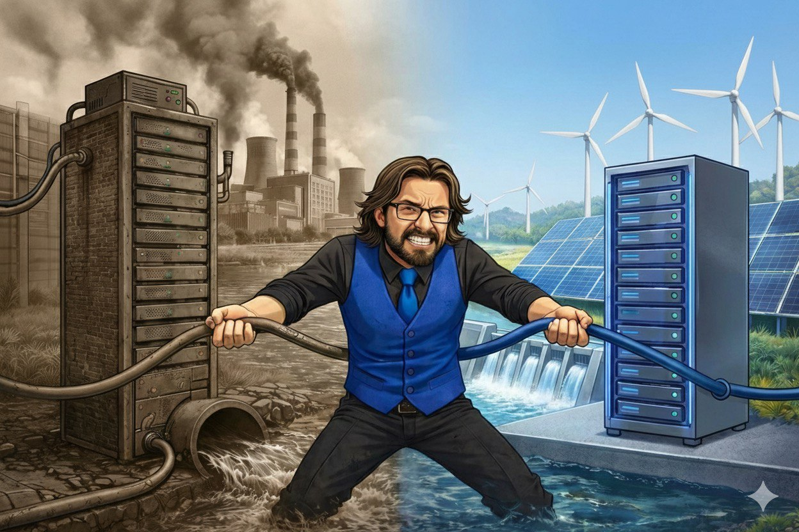

In the realm of artificial intelligence, where headlines often trumpet groundbreaking innovations, a quieter evolution is unfolding—one that centers on efficiency rather than sheer power.
While the spotlight often falls on the latest AI capabilities, there’s a subtle transformation underway that's easy to miss. This isn't the kind of change that turns heads with flashy demonstrations or viral videos... Rather, it's a shift in how AI works under the hood—becoming more efficient with the resources it uses. It's a significant yet understated development that carries considerable weight beneath its quiet surface.
The significance of this shift lies in its implications. As AI models become more efficient, they demand less power and water per task. This may not grab headlines, but it reshapes the landscape of AI, making it more sustainable and accessible.
At the core of this transformation is the ability of AI models to perform similar tasks with reduced computational demands. This isn't about dialing back AI's capabilities; instead, it's about doing more with less. The result is a refined approach to AI development that prioritizes resource management without sacrificing performance.
The mechanics involve optimizing algorithms and leveraging more effective data processing techniques. By honing these aspects, AI systems can achieve comparable outputs with diminished energy consumption. This clever balancing act extends the utility of existing infrastructure, allowing more work to be done without an exponential increase in resource usage.
This shift also means that the barrier to entry lowers, as the need for massive computational power becomes less prohibitive. It’s a democratization of AI, where the ability to utilize these tools effectively becomes as important as having access to them.
The implications of this efficiency shift are twofold. For one, it aligns with global sustainability goals by reducing the environmental footprint of AI technology. Lower energy and water usage means that AI can scale in a more environmentally conscious manner, a critical consideration as the world grapples with resource constraints.
Moreover, this efficiency enables broader access to AI capabilities. For smaller businesses and developers who previously found the cost of AI prohibitive, this shift opens new doors. It levels the playing field, allowing innovation to spring from ingenuity rather than sheer financial might.
However, it's important to acknowledge that efficiency doesn’t erase resource demands. As AI becomes more accessible and widely used, overall usage will likely increase. Yet, the key takeaway is the enhanced value produced per unit of power and water—a net positive in the broader scheme of technological advancement.
The trajectory of this quiet revolution is set towards a more inclusive and sustainable future for AI. As efficiency improves, we can anticipate a world where AI becomes a tool for many, not just the few. The focus will shift from accumulating more computational power to innovating within the constraints of existing resources.
Ultimately, this path leads to a more balanced relationship with technology, where the benefits of AI are more evenly distributed, and its environmental impact is consciously managed. It's a future that values efficiency not just as an ideal, but as an essential component of technological progress.
Dr.WinMac explores the infrastructure and automation changes that affect everyone, explained without jargon.
Back to Blog